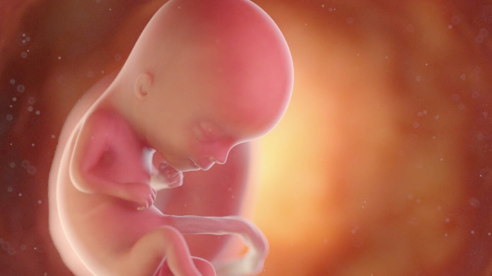

{kind=link}
PROGRESO
A las 13 semanas de embarazo, el bebé tiene el tamaño de una ciruela y continúa desarrollándose rápidamente. Sus órganos y sistemas principales ya están formados, y el corazón late con fuerza. La piel es delgada y traslúcida, y se comienzan a desarrollar las huellas dactilares. También comienza a mover sus brazos y piernas, aunque la madre aún no puede sentirlo. Los rizos del cabello y las cejas ya son visibles.

A las 13 semanas de embarazo, los síntomas de la madre suelen comenzar a disminuir. Las náuseas y los vómitos pueden empezar a reducirse, y la energía tiende a mejorar. Puede haber un aumento en la producción de saliva. Algunas mujeres experimentan cambios en la piel, como manchas oscuras. El útero empieza a crecer, lo que puede causar molestias en el abdomen. También pueden aparecer cambios emocionales debido a las hormonas.

NUESTRA HISTORIA
Tras un tiempo separados, la vida nos ha vuelto a unir en una isla preciosa donde con paciencia y esfuerzo hemos creado una bonita FAMILIA. Ahora comenzamos un nuevo camino con un integrante más en la casa.